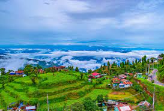

Country India State West Bengal District Darjeeling Settled Leased in 1835 from Tsugphud Namgyal, the Chogyal of the Kingdom of Sikkim, and annexed in 1849.[1][2][3] Municipality, 1 July 1850.[4][5] Founded by British East India Company, during Company rule in India[6][7] Government • Type Municipality • Body Darjeeling Municipality • Chairman Dipen Thakuri[8] Area[a] • Total 7.43 km2 (2.87 sq mi) Elevation[b] 2,045 m (6,709 ft) Population (2011)[c][d][e] • Total 118,805 • Density 15,990/km2 (41,400/sq mi) Languages • Official Bengali and Nepali[13] Time zone UTC+5:30 (IST) arjeeling (/dɑːrˈdʒiːlɪŋ/,[14] Bengali: [ˈdarˌdʒiliŋ], Nepali: [ˈdard͡ziliŋ]) is a city in the northernmost region of the Indian state of West Bengal. Located in the Eastern Himalayas, it has an average elevation of 2,045 metres (6,709 ft).[10] To the west of Darjeeling lies the easternmost province of Nepal, to the east the Kingdom of Bhutan, to the north the Indian state of Sikkim, and farther north the Tibet Autonomous Region region of China. Bangladesh lies to the south and southeast, and most of the state of West Bengal lies to the south and southwest, connected to the Darjeeling region by a narrow tract. Kangchenjunga, the world's third-highest mountain, rises to the north and is prominently visible on clear days.[f][16]